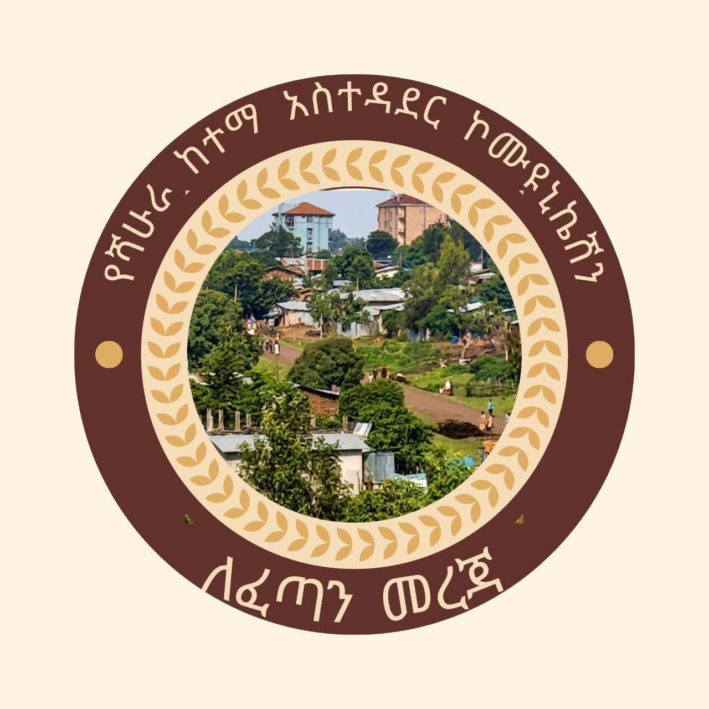

August 8, 2026
ይህ ገጽ ተጀምሯል! ወደ ፊት ዜናዎቻችንን እዚህ ይከታተሉ።
This page just launched! Follow our news here going forward.

ኦፊሴላዊ ማስታወቂያዎች፣ ዜናዎች እና ወቅታዊ መረጃዎች ለከተማችን ነዋሪዎች Official announcements, news, and updates for the residents of Shahura
ፌስቡክ ገጻችንን ይጎብኙVisit our Facebook PageAugust 8, 2026
ይህ ገጽ ተጀምሯል! ወደ ፊት ዜናዎቻችንን እዚህ ይከታተሉ።
This page just launched! Follow our news here going forward.
August 7, 2026
ናሙና ዜና ጽሑፍ - ይህንን በራስዎ መረጃ ይተኩ።
Sample news post — replace this with your own update.
ይህ ገጽ ለሻሁራ ከተማ ነዋሪዎች ኦፊሴላዊ መረጃ፣ ማስታወቂያ እና ዜና ለማድረስ የተዘጋጀ ነው። የቅርብ ጊዜ መረጃ ለማግኘት እባክዎ ከላይ ያለውን የፌስቡክ ገጽ ይከተሉ። This page connects residents of Shahura with official announcements, news, and updates from the City Administration. Follow our Facebook page above for the latest information.